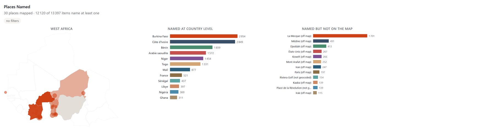
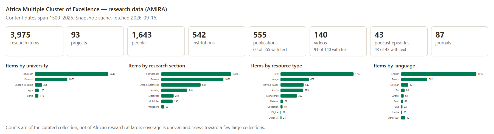
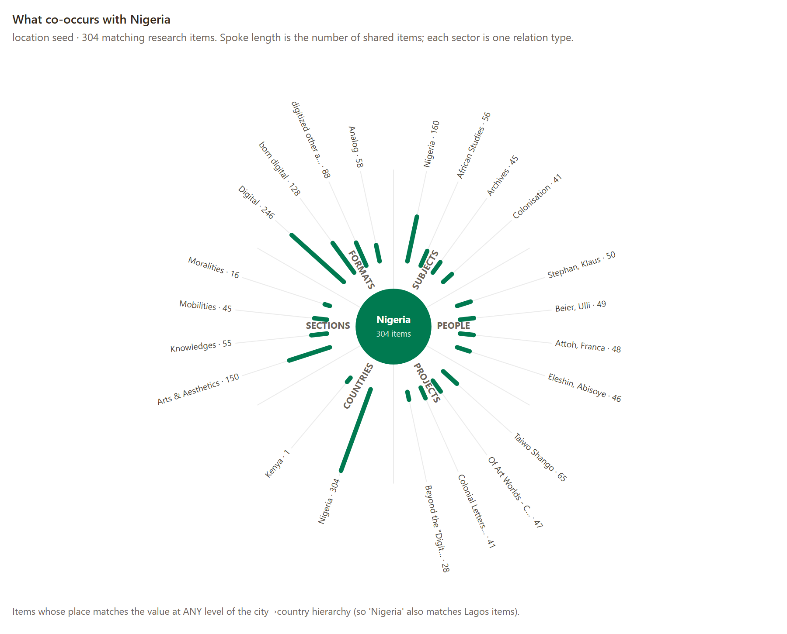
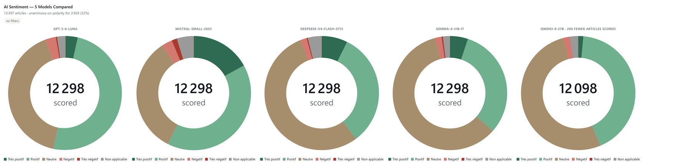

39 institutions sur 43 voient leur trafic grimper ; sept sur dix accusent les robots
Et qui, pour la plupart, ignorent le robots.txt
En aval · la désaffection
La question va désormais à un assistant, non plus à un champ de recherche
Or chercher par mots-clés suppose de savoir déjà nommer ce qu’on cherche
Ce que la recherche par mots-clés perd, les chatbots ne le renvoient pas.
Chez les éditeurs de presse, le trafic venu de Google recule de 34 % en un an — 60 % pour les plus petits — tandis que les plateformes d’IA renvoient moins de 1 % des pages vues (Chartbeat, mars 2026). Les GLAM ne disposent pas encore d’une mesure équivalente.
01
Deux collections
Une archive de presse, une plateforme de données de recherche.
Collection Islam Afrique de l’Ouest (CIAO / IWAC)
Une archive ouverte, bâtie par un historien
Quinze ans de terrain et de bibliothèque versés dans une base en accès ouvert depuis 2023.
Coupures de presse et publications islamiques : revues, brochures, tracts
Six pays, surtout en français, mais aussi en arabe et en haoussa
Génération augmentée par la recherche. Éprouvée dans les GLAM, mais elle copie la collection ailleurs, découpe les notices et classe les résultats par une similarité que personne ne voit.
MCP
N’ingère rien. Les données restent en place, le serveur garde la logique, le modèle ne fait que demander et rédiger. modelcontextprotocol.io
L’analogie
Comme IIIF pour les images : une interface partagée, sans livrer les originaux. On construit le serveur une fois ; Claude, ChatGPT ou un modèle libre s’y connectent tous.
Deux serveurs, une même norme
Ce qui tourne aujourd’hui
CIAOv3.5.0
34 outils en lecture seule ; 37 avec la recherche sémantique
Extension en un clic pour Claude Desktop ; point d’accès hébergé sur islam.zmo.de/mcp
Licence MIT, DOI Zenodo, publié au registre MCP
AMIRAv1.14.0
26 outils ; 28 en HTTP, où ChatGPT exige search et fetch
Instantané embarqué : fonctionne hors ligne, se rafraîchit une fois par jour
Sans clé d’API ni compte : la donnée est déjà publique
Vérifiable par construction
Chaque appel est une requête en base, sans IA au moment de la question. Chaque résultat renvoie l’URL de sa notice canonique.
03
Exposer la structure
Les documents, et l’organisation qui les tient.
Sujets, lieux, personnes
Le modèle voit l’index, pas seulement les notices

get_place_distribution · dessiné par le serveur dans la conversation
Ce que la carte dit de l’archive
Le quatrième pays le plus cité est l’Arabie saoudite, et le lieu le plus cité hors d’Afrique de l’Ouest — La Mecque, 1 701 mentions — devance toutes les villes de la collection sauf Ouagadougou.
Pourquoi cet axe et pas l’autre
Sur 1961–2026, chaque fête s’étale sur les douze mois grégoriens : le Ramadan n’apparaît qu’ici, +74 % au-dessus d’une répartition uniforme.
Décrire un ensemble, pas le parcourir
Une réponse que la pagination ne donne jamais

get_collection_overview · le premier appel de toute recherche
La note que le graphique porte lui-même
« Ces comptes décrivent la collection constituée, non la recherche africaine dans son ensemble ; la couverture est inégale et penche vers quelques grands fonds. »
Remonter d’une entité vers tout ce qui s’y rattache
Une entité et ses liens

find_related · six types de relation · cliquer pour agrandir
On donne un sujet, un lieu ou une personne ; l’outil renvoie tout ce qui co-apparaît, par type de relation.
« Nigeria » comme point de départ : 304 items
Sujets voisins : études africaines, archives, colonisation
Personnes, projets et sections qui les portent
Pourquoi cela compte
La relationalité est un concept directeur du cluster ; l’outil la rend interrogeable.
Sans ancrage : fluide, assuré, invérifiable, et pire pour l’Afrique, peu représentée
Avec le serveur : chaque affirmation renvoie à une notice vérifiable
L’ironie : la CIAO est moissonnée en continu, et presque jamais citée
La bascule
Le modèle cesse d’être une autorité et redevient un instrument de repérage.
04
La question de l’atelier
Souveraineté, ou dépendance déplacée ?
Protéger la souveraineté des collections africaines, ou déplacer la dépendance vers quelques fournisseurs de modèles ?
La question que cet atelier doit poser à ce type de médiation.
Argumenter des deux côtés
Ce que le protocole règle — et ce qu’il ne règle pas
Ce qu’il protège
Rien n’est copié : l’institution décide de ce que l’assistant voit
Norme ouverte, code MIT : aucun enfermement propriétaire
Une visite qui revient à la notice au lieu de s’y substituer
Ce qu’il déplace
Le raisonnement reste chez trois ou quatre fournisseurs ; les clients les plus capables sont payants
Les deux serveurs sont hébergés en Allemagne : Berlin et Bayreuth
Un serveur suppose des métadonnées propres : le vrai coût, inégalement réparti
Le piège que nomme Yékú · 2026
Non numérisée, l’archive africaine est invisible ; numérisée, elle est exposée, et le corpus incomplet devient l’histoire unique. Lire l’essai ↗
Conclusion
Une porte d’entrée de plus, pour un public plus large — et non un substitut à la recherche en archives. On y trouve ce qu’on demande, pas ce qu’on ne cherchait pas.
À essayer : les deux serveurs sont ouverts, documentés et installables aujourd’hui — page d’accès IA de la CIAO.
Ensuite : un petit modèle libre sur le serveur lui-même, qui répondrait depuis le site, sans installation ni compte.
Ces diapositivesslides.frederickmadore.com
A
Annexes
Matériel de réserve pour la discussion.
Annexe · les données dérivées de l’IA
Cinq modèles, un tiers d’accord

get_sentiment_distribution(model="all") · la divergence, servie telle quelle
Pourquoi montrer le désaccord
Les cinq modèles ne s’accordent sur la polarité que pour 3 929 des 12 298 articles qu’ils ont tous notés. Servir un seul score le ferait passer pour un fait ; les cinq le laissent pour ce qu’il est.
get_topic_distribution(country="Burkina Faso") · 30 thèmes LDA calculés hors ligne
Annexe · la méthode, écrite
Le serveur donne la portée, le skill donne le jugement
Un agent skill est un manuel de méthode en texte clair, que l’assistant lit quand la demande le concerne.
Cadrage — ce que la collection contient, avant tout mot-clé
Recherche systématique — en français, variantes de translittération, recherches nulles consignées
Lecture approfondie — texte intégral, article par article
Triangulation — presse, publications, références, index
Synthèse — sources attribuées et degré de confiance
Nouveau depuis juin
Le serveur sert lui-même son manuel par la connexion (SEP-2640, brouillon de norme) : le client distant reçoit le mode d’emploi sans rien télécharger. Coût quand il n’est pas lu : zéro.

 La collectionislam.zmo.de
La collectionislam.zmo.de